Teil 1 · Didaktik 2.2 · Generation a3ce3d7f1e8f82b2

Der Wackelturm ersetzt die frühere Kopf-Bomber-Idee. Das Lehrmodell WT-1 besitzt zwei Stockwerke mit mehreren Helmen und weiteren Bauteilen. Du sagst zuerst voraus, wie stark eine Antwort sich verändert, und setzt dann an einer Kopie den Beitrag eines Teils auf null. So wird seine Wirkung messbar. Die Helme heißen Strich, Punkt und Welle nach ihren Mustern. Eine Aufgabe erhält keinen fest zugeteilten Helmberuf: Wirkung, Ersatz und Überlagerung hängen vom Satz und den übrigen Teilen ab.
Ziehe denselben Helm in unterschiedlichen Sätzen und vergleiche die Lichtpunkte. Prüfe außerdem Fina, Nora, Oskar und Ressi. Gib einen Spitznamen erst nach der Beobachtung und überprüfe ihn am nächsten Satz.
Ein einzelner Helm kann wenig oder stark beitragen. Fina kann Faktenwahl verändern, während die Satzform erhalten bleibt. Im Lehrturm verändern Nora, Oskar und Ressi andere Rechenwege. Eine helle Aufmerksamkeitswolke zeigt die Verteilung; sie beweist noch nicht, dass ihr Helm entscheidend ist.
Ziehen ist eine Untersuchung an einer Kopie. Beim normalen Antworten entfernt niemand Teile. Halte Wahrscheinlichkeit, Logit und Aufmerksamkeit auseinander und prüfe den behaupteten Helmberuf an einem neuen Satz.